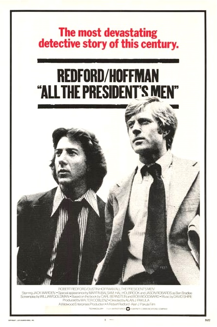

All the President's Men
49th Academy Awards
(Oscars 1977)
8 Nominations, 4 Awards
| Nominations | ||
|---|---|---|
| Category | Nominees | Result |
| Best Picture | Walter Coblenz | Nominated |
| Actor in a Supporting Role | Jason Robards | Won |
| Actress in a Supporting Role | Jane Alexander | Nominated |
| Directing | Alan J. Pakula | Nominated |
| Writing (Screenplay--based on material from another medium) | William Goldman | Won |
| Film Editing | Robert L. Wolfe | Nominated |
| Art Direction | George Gaines and George Jenkins | Won |
| Sound | Arthur Piantadosi, Dick Alexander, Jim Webb, and Les Fresholtz | Won |